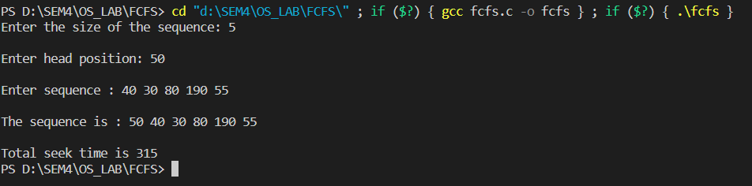
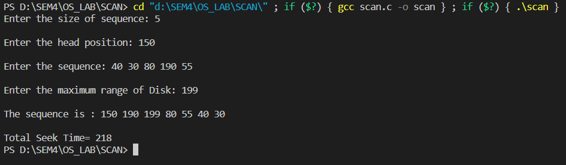
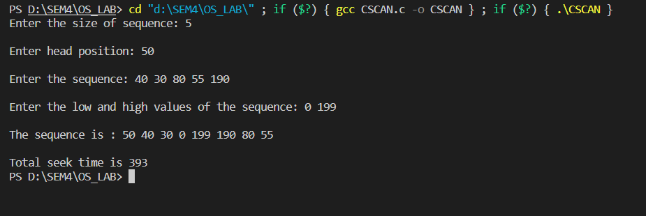
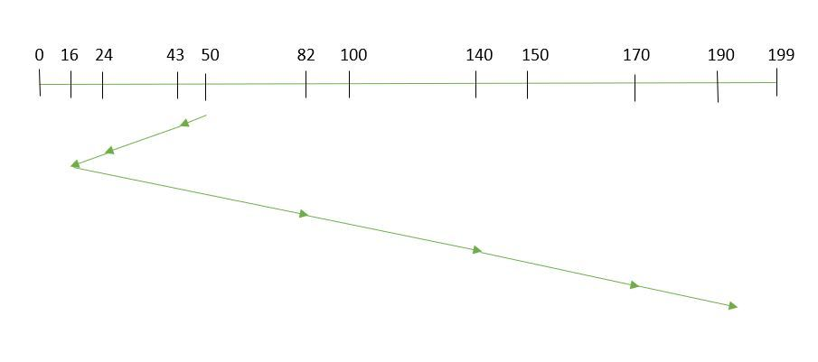
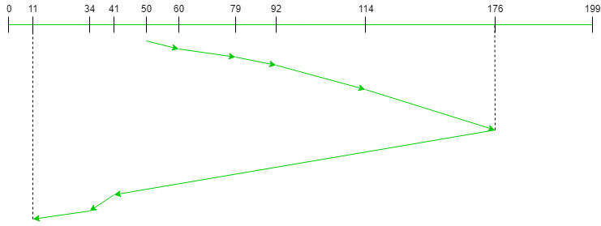

Disk Scheduling
Disk scheduling is done by operating systems to schedule I/O requests arriving for the disk. Disk scheduling is also known as I/O scheduling. Disk scheduling is important because:- Multiple I/O requests may arrive by different processes and only one I/O request can be served at a time by the disk controller. Thus other I/O requests need to wait in the waiting queue and need to be scheduled.
- wo or more request may be far from each other so can result in greater disk arm movement.
- Hard drives are one of the slowest parts of the computer system and thus need to be accessed in an efficient manner.
Disk Scheduling Algorithms
FCFS
FCFS is the simplest of all the Disk Scheduling Algorithms. In FCFS, the requests are addressed in the order they arrive in the disk queue.Let us understand this with the help of an example.Example: Suppose the order of request is- (82,170,43,140,24,16,190) And current position of Read/Write head is : 50

So, total seek time: =(82-50)+(170-82)+(170-43)+(140-43)+(140-24)+(24-16)+(190-16)=642
Advantages:
- Every request gets a fair chance.
- No indefinite postponement.
- Does not try to optimize seek time.
- May not provide the best possible service.

SCAN
In SCAN algorithm the disk arm moves into a particular direction and services the requests coming in its path and after reaching the end of
disk, it reverses its direction and again services the request arriving in its path. So, this algorithm works as an elevator and hence also known
as elevator algorithm. As a result, the requests at the midrange are serviced more and those arriving behind the disk arm will have to wait.
Example:
Suppose the requests to be addressed are-82,170,43,140,24,16,190. And the Read/Write arm is at 50, and it is also given that the disk arm should
move “towards the larger value”.

Therefore, the seek time is calculated as=(199-50)+(199-16)=332
Advantages:
- High throughput.
- Low variance of response time.
- Average response time.
- Long waiting time for requests for locations just visited by disk arm.

CSCAN
In SCAN algorithm, the disk arm again scans the path that has been scanned, after reversing its direction. So, it may be possible that too many
requests are waiting at the other end or there may be zero or few requests pending at the scanned area.
These situations are avoided in CSCAN algorithm in which the disk arm instead of reversing its direction goes to the other end of the disk and
starts servicing the requests from there. So, the disk arm moves in a circular fashion and this algorithm is also similar to SCAN algorithm and
hence it is known as C-SCAN (Circular SCAN).
Suppose the requests to be addressed are-82,170,43,140,24,16,190. And the Read/Write arm is at 50, and it is also given that the disk arm should
move “towards the larger value”.
Seek time is calculated as=(199-50)+(199-0)+(43-0) =391
Advantages:
- Provides more uniform wait time compared to SCAN.

SSTF
In Shortest Seek Time First(SSTF)), requests having shortest seek time are executed first. So, the seek time of every request is calculated in advance in the queue and then they are scheduled according to their calculated seek time. As a result, the request near the disk arm will get executed first. SSTF is certainly an improvement over FCFS as it decreases the average response time and increases the throughput of systemExample: Suppose the order of request is- (82,170,43,140,24,16,190) And current position of Read/Write head is : 50 
So, total seek time=(50-43)+(43-24)+(24-16)+(82-16)+(140-82)+(170-140)+(190-170)=208
Advantages:
- Average Response Time decreases.
- Throughput increases.
- Overhead to calculate seek time in advance.
- Can cause Starvation for a request if it has higher seek time as compared to incoming requests.
- High variance of response time as SSTF favours only some requests.
LOOK
LOOK is the advanced version of SCAN disk scheduling algorithm which gives slightly better seek time than any other algorithm in the hierarchy (FCFS->SRTF->SCAN->C-SCAN->LOOK). The LOOK algorithm services request similarly as SCAN algorithm meanwhile it also “looks” ahead as if there are more tracks that are needed to be serviced in the same direction. If there are no pending requests in the moving direction the head reverses the direction and start servicing requests in the opposite direction. The main reason behind the better performance of LOOK algorithm in comparison to SCAN is because in this algorithm the head is not allowed to move till the end of the disk.Examples: = {176, 79, 34, 60, 92, 11, 41, 114}
Initial head position = 50
Direction = right (We are moving from left to right)

Seek time=(60-50)+(79-60)+(92-79)+(114-92)+(176-114)+(176-41)+(41-34)+(34-11)
Advantages:
- If there are no requests left to be services the Head will not move to the end of the disk unlike SCAN algorithm.
- Better performance is provided compared to SCAN Algorithm.
- Starvation is avoided in LOOK scheduling algorithm.
- Low variance is provided in waiting time and response time.
- Overhead of finding the end requests is present.
- Cylinders which are just visited by Head have to wait for long time.
C-LOOK
C-LOOK is an enhanced version of both SCAN as well as LOOK disk scheduling algorithms. This algorithm also uses the idea of wrapping the tracks as a circular cylinder as C-SCAN algorithm but the seek time is better than C-SCAN algorithm. We know that C-SCAN is used to avoid starvation and services all the requests more uniformly, the same goes for C-LOOK. In this algorithm, the head services requests only in one direction(either left or right) until all the requests in this direction are not serviced and then jumps back to the farthest request on the other direction and service the remaining requests which gives a better uniform servicing as well as avoids wasting seek time for going till the end of the disk.Examples: Sequence = {176, 79, 34, 60, 92, 11, 41, 114} Initial head position = 50 Direction = right (Moving from left to right)

Seek time=(60– 50) + (79 – 60) + (92 – 79) + (114 – 92) + (176 – 114) + (176 – 11) + (34 – 11) + (41 – 34) = 321
Advantages:
- In C-LOOK the head does not have to move till the end of the disk if there are no requests to be serviced.
- Low variance is provided in waiting time and response time.
- There is less waiting time for the cylinders which are just visited by the head in C-LOOK.
- Starvation is avoided in C-LOOK.
- C-LOOK provides better performance when compared to LOOK Algorithm.
- In C-LOOK an overhead of finding the end requests is present.